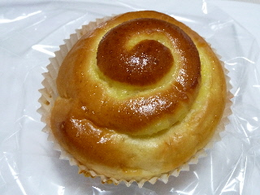
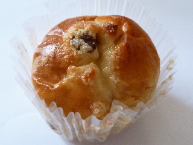
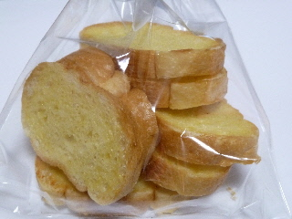
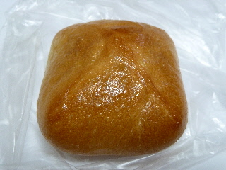
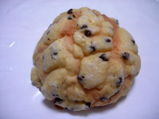
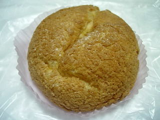

ラピタ本店のクリームパン
2011/08/14
カップに入ったクリームパンです。
このお店ではカップに入った柔らかいパンが複数種類販売していました。

くるくるとしたところにクリームが挟んでありました。
ふんわりしたパンに美味しいクリームが良くあっていました。ほどよい甘さが丁度良かったです。
島根県出雲市今市町87
2011/08/14
カップに入ったクリームパンです。
このお店ではカップに入った柔らかいパンが複数種類販売していました。

くるくるとしたところにクリームが挟んでありました。
ふんわりしたパンに美味しいクリームが良くあっていました。ほどよい甘さが丁度良かったです。
2011/05/03
カップに入ったやわらかいレーズンパンです。

私はレーズンパンが好きなので、美味しくいただきました。
ふわふわのパンと甘いレーズンの組み合わせはいいですね。
2011/01/30
チーズ味のラスクってありそうだけど、あんまり販売していない気がします。

サクサクでいいラスクでした。ほんのりチーズ味で軽くて美味しかったです。これはちょっと当たりだなって思いました。

これは小さな揚げ肉まんです。
今日は小さいサイズのパンが沢山並んでいました。
お値段がお手頃で買いやすかったです。
2010/8/24
大きなチョコメロンです。

写真でみるとなんかユニークな形ですね。
2009/8/14
クッキータイプのシュークリームで、ちょっと大きめです。

クッキーが上だけじゃなく、全体がクッキー生地なので、ザックザックな食感です。
ちょっと粉が落ちて食べにくいですが、美味しくていいですね。
パン屋さんのシュークリームなので、ケーキ屋さんとはちょっと違った感じのクリームで、クリームパンのクリームがシュークリームに入ったみたいな味でした。これはこれでクッキーシューによく合ってていい味でした。
JAしまねが運営するスーパー「ラピタ」内のパンコーナーです。